Capítulo 3: Bancos de Dados GeoPackage
O GeoPackage (extensão .gpkg) é atualmente um dos formatos
mais versáteis e eficientes para o armazenamento de dados espaciais e
atributos no ambiente SIG. Desenvolvido com base no banco de dados SQLite e
padronizado pelo OGC (Open Geospatial Consortium), ele permite reunir em
um único arquivo todas as informações de um projeto: camadas espaciais
(pontos, linhas, polígonos), tabelas não espaciais, estilos, layouts e até o
próprio projeto QGIS.
Neste capítulo, vamos explorar em profundidade o funcionamento do GeoPackage dentro do QGIS. Começaremos entendendo o que acontece nos bastidores quando uma camada é criada, e avançaremos com práticas fundamentais como a criação de tabelas, adição de dados espaciais e não espaciais, renomeação e exclusão de camadas, otimização do banco de dados e integração com estilos e projetos salvos.
A proposta é que você, ao final deste capítulo, domine o uso do GeoPackage como banco de dados local e consiga aproveitá-lo plenamente em seus projetos de geoprocessamento.
3.1 O que acontece nos bastidores do QGIS ao criar uma GeoPackage?
Ao criar um banco de dados ou uma tabela no QGIS, especialmente em formato GeoPackage (.gpkg), o programa não cria apenas a tabela com os campos definidos pelo usuário. Na verdade, ele executa automaticamente uma série de comandos SQL para garantir que o banco seja compatível com o funcionamento interno do QGIS e com a estrutura do padrão OGC (Open Geospatial Consortium).
Essas operações incluem a criação e o preenchimento automático de tabelas de sistema e metadados, como por exemplo aquelas que armazenam informações sobre estilos, formulários e propriedades das camadas.
A imagem abaixo mostra um GeoPackage criado no QGIS (exibido no DB Browser[3]), no qual o usuário adicionou apenas a tabela 'GEO2'. As demais foram geradas automaticamente pelo sistema para armazenar metadados, estilos e outras informações necessárias ao funcionamento do projeto.2F[4]
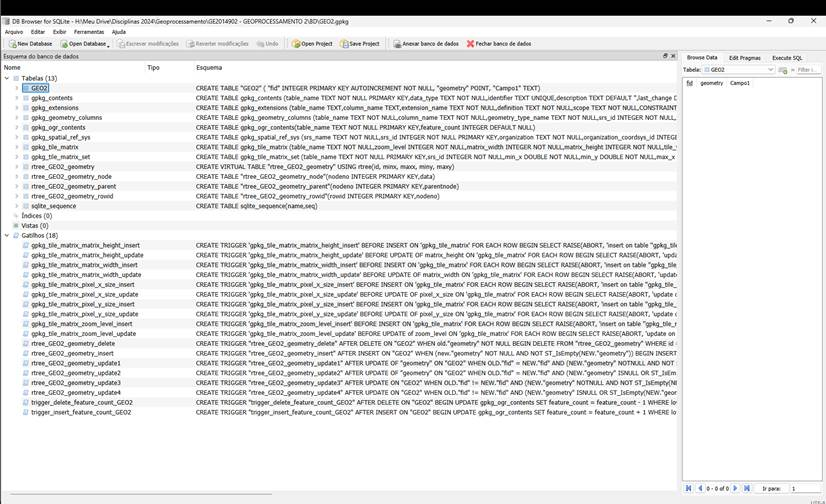
Figura 3‑1 : arquivo GeoPackage criado no QGIS exibido no DB Browser
Mesmo com a GeoPackage já criada, se quisermos criar uma tabela espacial do zero, sem usar o QGIS, precisamos replicar todas as operações realizadas pelo QGIS, porém com comandos SQL. Veja um exemplo de criação de uma tabela de pontos que o QGIS entenderá como camada espacial:
-- Criação da tabela
CREATETABLEpontos_site (
id INTEGERPRIMARY KEY AUTOINCREMENT,
nome TEXTNOT NULL,
descricao TEXT,
geom BLOB NOT NULL -- a geometria será registrada como BLOB
);
-- Registro da tabela na gpkg_contents
INSERT INTO gpkg_contents (
table_name, data_type, identifier, description, last_change, min_x, min_y, max_x, max_y, srs_id
)
VALUES (
'pontos_site', 'features', 'pontos_site', 'Camada de pontos', CURRENT_TIMESTAMP, 0, 0, 0, 0, 4326
);
-- Registro do campo geométrico na gpkg_geometry_columns
INSERT INTO gpkg_geometry_columns (
table_name, column_name, geometry_type_name, srs_id, z, m
)
VALUES (
'pontos_site', 'geom', 'POINT', 4326, 0, 0
);
-- Registro do sistema de referência espacial se ainda não estiver presente
INSERTORIGNOREINTO gpkg_spatial_ref_sys (
srs_name, srs_id, organization, organization_coordsys_id, definition
)
VALUES (
'WGS 84', 4326, 'EPSG', 4326, 'GEOGCS["WGS 84", ...]'
);
Neste curso, não trabalharemos com a criação de tabelas diretamente por meio de comandos SQL. Por ora, utilizaremos o QGIS como ferramenta principal para construir nossas tabelas, aproveitando sua interface gráfica intuitiva.
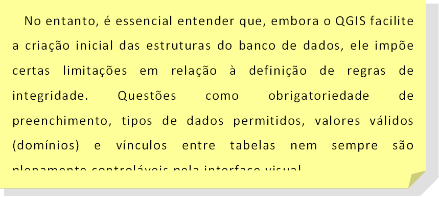
Por isso, quando pensamos na modelagem dos dados, precisamos conhecer as possibilidades e as limitações do QGIS nesse processo. Essa compreensão será fundamental para garantir que o banco de dados resultante seja confiável, consistente e compatível com futuras análises e integrações.
Nesta etapa do curso não vamos modelar um banco de dados desde o início, que seria o ideal, vamos importar dados e trabalhar neles.
3.2 Criando uma GeoPackage
Vamos criar um arquivo GeoPackage: Abra o QGIS e clique em Camada > Criar camada > Nova camada GeoPackage.
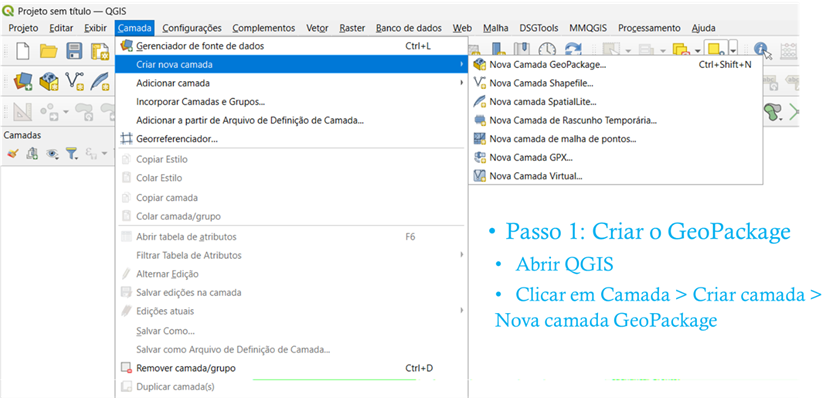
Figura 3‑2: Como criar um GeoPackage
Ao criar um banco de dados no formato GeoPackage (*.gpkg) no QGIS, o software exige que seja criada, já no momento da criação, pelo menos uma tabela (ou camada) dentro deste arquivo. Essa obrigatoriedade existe porque o QGIS precisa definir uma estrutura mínima que torne o banco utilizável e reconhecível no ambiente do projeto.
Em particular, quando a camada criada é espacial (ou seja, possui geometria de pontos, linhas ou polígonos), é necessário definir também um sistema de referência de coordenadas (SRC), que é uma informação essencial para o correto posicionamento dos dados no mapa.
Se não houver nenhuma camada espacial ao criar o GeoPackage, o banco continuará sendo válido para armazenamento de dados tabulares, mas não poderá ser utilizado imediatamente em operações geográficas que dependem de localização e projeção. Por isso, ao criar o arquivo pelo QGIS, o fluxo padrão já sugere a criação de uma camada espacial — pois, além de garantir o funcionamento pleno do banco no ambiente SIG, também permite que o QGIS registre internamente o SRC e outras configurações relacionadas à espacialidade dos dados. Segue um exemplo de criação da GeoPackage com uma tabela inicial denominada Pontos:
I. Nomear Arquivo e Tabela:
• Em "Banco de Dados", clique em "..." para escolher o local e nomear seu arquivo GeoPackage (ex: BD_Balneabilidade.gpkg).
• Em "Nome da tabela", defina o nome da sua primeira camada de dados (ex: Pontos).
II. Definir Geometria e SRC:
• Escolha o "Tipo de geometria" (ex: Ponto, Linha, Polígono).
• Clique no ícone ao lado do campo SRC para selecionar o Sistema de Referência de Coordenadas adequado para sua camada (ex: EPSG:31982 – SIRGAS 2000 / UTM zone 22S).
III. Adicionar Campos (Atributos):
• Na seção "Novo Campo", informe o "Nome" (ex: codigo), "Tipo" (ex: Texto) e "Comprimento" (se texto).
• Clique em "Adicionar campos à lista" para cada atributo necessário. No exemplo: nome (Texto), codigo (Texto), descricao (Texto).
IV. Confirmar:
• Mantenha a opção "Criar um índice espacial" marcada para melhor performance.
• Clique em "OK". O QGIS criará o arquivo .gpkg e a camada especificada.
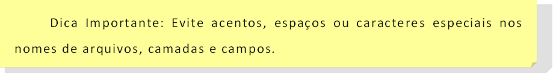
Este processo cria um arquivo GeoPackage organizado com sua primeira camada de dados espaciais, pronto para uso em seus projetos de geoprocessamento.
3.3 Salvar o Projeto dentro da GeoPackage
|
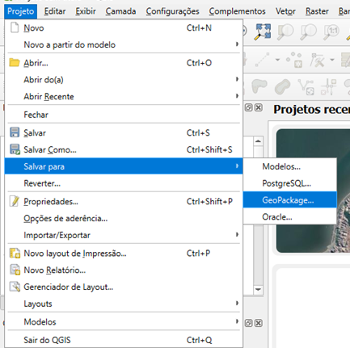 Figura 3‑4 : Salvar projeto na GeoPackage |
I. Vá em 'Projeto' > 'Salvar Para...'. II. No tipo de arquivo, selecione 'GeoPackage (*.gpkg)'. III. Escolha a conexão do arquivo GeoPackage desejado. IV. Dê um nome interno para o projeto. V. Clique em 'Salvar'. VI. O projeto será armazenado como uma entrada especial dentro do GPKG. 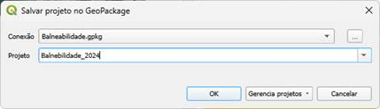 Figura 3‑5 : Escolhendo a conexão e nome do projeto |
3.4 Conectando ao QGIS um Banco de dados GeoPackage
Uma vez que um arquivo GeoPackage (.gpkg) já existe – seja porque foi criado anteriormente ou recebido de outra fonte – conectá-lo ao seu projeto no QGIS é um processo direto. O QGIS utiliza o painel "Navegador" para facilitar o acesso a diversas fontes de dados, incluindo os GeoPackages.
Localize o Painel Navegador: Geralmente, este painel está visível por padrão na interface do QGIS. Caso não esteja, pode ativá-lo através do menu "Exibir" > "Painéis" > "Navegador".
Acesse à Secção GeoPackage: No painel Navegador, expanda a árvore de itens até encontrar a entrada "GeoPackage".
Estabelecer uma Conexão (se necessário):
O QGIS pode listar automaticamente GeoPackages de diretórios que já foram acedidos.
Para adicionar um GeoPackage de um local específico, clique com o botão direito sobre o item "GeoPackage" no Navegador e selecione a opção "Nova Conexão...". Navegue até o diretório onde o seu arquivo .gpkg está guardado, selecione-o e clique em "Abrir". O arquivo aparecerá listado sob a entrada "GeoPackage".
Explorar o Conteúdo do GeoPackage: Após a conexão, o arquivo GeoPackage aparecerá no Navegador. Clique na seta ao lado do nome do arquivo para expandir e visualizar todas as camadas (tabelas espaciais e não espaciais) contidas nele.
3.5 Criar Camadas (tabelas) no GeoPackage
3.5.1 Camadas não espaciais
I. Acesse o Navegador do QGIS:
• O painel "Navegador" geralmente fica localizado à esquerda da interface do QGIS. Se não estiver visível, você pode ativá-lo no menu Exibir > Painéis > Navegador.
II. Localize seu GeoPackage:
• No painel Navegador, expanda a seção "GeoPackage".
• Encontre o arquivo GeoPackage ao qual você deseja adicionar a nova tabela.
III. Crie uma Nova Tabela:
• Clique com o botão direito do mouse sobre o nome do seu arquivo GeoPackage existente.
• No menu de contexto que aparece, escolha a opção Nova Tabela....
(Imagem ilustrativa, a interface pode variar ligeiramente)
IV. Configure a Nova Tabela:
Na janela "Nova Tabela" que se abre:
• Nome da Tabela: Digite Medicoes.
• Adicionar Campos: Adicione os seguintes campos, um por um, especificando o nome e o tipo:
§ id_ponto: Tipo Texto (string)
§ data_coleta: Tipo Data
§ valor: Tipo Número decimal (real)
§ chuva: Tipo Texto (string)
§ improprio: Tipo Booleano
• Tipo de Geometria: No menu suspenso "Tipo de geometria", selecione a opção Sem geometria. Isso é crucial, pois estamos criando uma tabela apenas de atributos.
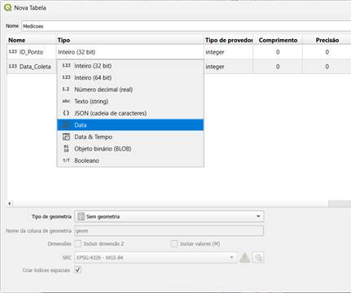
V. Confirmar Criação:
Após configurar todos os campos e garantir que "Sem geometria" está selecionado, clique no botão OK.
A nova tabela "Medicoes" será criada dentro do seu arquivo GeoPackage e aparecerá listada sob ele no painel Navegador.
3.5.2 Camadas espaciais
1. Acesse o Navegador do QGIS:
• Como antes, localize o painel "Navegador" na interface do QGIS.
2. Localize seu GeoPackage:
• No painel Navegador, expanda a seção "GeoPackage".
• Encontre o arquivo GeoPackage ao qual você deseja adicionar a nova tabela espacial.
3. Crie uma Nova Camada/Tabela:
• Clique com o botão direito do mouse sobre o nome do seu arquivo GeoPackage existente.
• No menu de contexto, escolha a opção Nova Camada... (ou Nova Tabela... – a interface pode variar ligeiramente, mas ambas levam a um diálogo similar onde você pode definir a geometria).
4. Configure a Nova Camada Espacial:
Na janela "Nova Camada GeoPackage" (ou similar) que se abre:
§ Nome da Tabela: Digite Areas_Interesse.
§ Tipo de geometria: Selecione Polígono no menu suspenso.
§ Você também pode optar por "Incluir dimensão Z" ou "Incluir valores M", se aplicável.
§ Sistema de Referência de Coordenadas (SRC): Este é um passo crucial para tabelas espaciais. Clique no botão ao lado do campo de SRC (geralmente com um ícone de globo 🌐) para escolher o SRC apropriado para os seus dados. Sempre defina um SRC.
§ Adicionar Campos: Adicione os seguintes campos à tabela de atributos:
§ id_area: Tipo Número Inteiro (integer)
§ nome_area: Tipo Texto (string) (defina um comprimento máximo, ex: 80)
§ tipo_uso: Tipo Texto (string) (ex: "Preservacao", "Recreacao", "Estudo", comprimento ex: 50)
§ data_cadastro: Tipo Data
§ Opções Avançadas (Verifique):
§ Coluna de geometria: Geralmente será geom ou geometry por padrão.
§ Criar um índice espacial: Certifique-se de que esta opção esteja marcada. É fundamental para o bom desempenho de camadas espaciais pois este índice melhora a performance especialmente em camadas com grande volume de dados ou operações frequentes de seleção e visualização.
(Imagem ilustrativa da janela de configuração da camada)
5. Confirmar Criação:
· Após configurar todos os campos, o tipo de geometria e o SRC, clique em OK.
A nova tabela espacial "Areas_Interesse" será criada dentro do seu arquivo GeoPackage.
3.6 Adicionar as Camadas para o GeoPackage
Adicionar Camadas ao Projeto: Para utilizar uma camada no seu mapa, basta arrastá-la do painel Navegador para a janela do mapa ou para o painel "Camadas". Alternativamente, pode clicar duas vezes sobre a camada desejada ou clicar com o botão direito sobre ela e selecionar "Adicionar camada ao projeto".
3.7 Renomear tabelas no GeoPackage
Para manter o seu banco de dados GeoPackage organizado, pode ser necessário renomear tabelas (camadas) para que os seus nomes sejam mais descritivos ou sigam um padrão. Siga os passos abaixo:
I. No painel "Navegador", dentro da conexão do seu GeoPackage, clique com o botão direito do mouse sobre a tabela (camada) que deseja renomear.
II. No menu de contexto que surge, selecione "Gerenciar" e, em seguida, clique em "Renomear a camada...".
III. Na janela de diálogo que aparecerá, digite o novo nome desejado para a tabela (por exemplo, "Locais_Coleta") no campo apropriado.
IV. Clique no botão "OK" (ou "Sim", dependendo da versão do QGIS e do idioma) para confirmar a alteração e renomear a tabela.
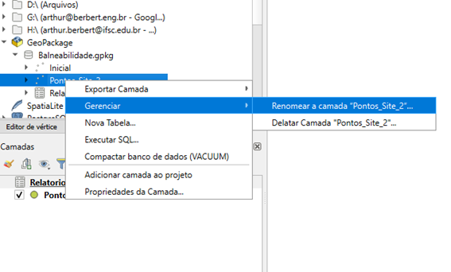
Figura 3‑9: Menu popup para renomear a tabela.
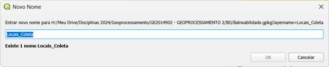
Figura 3‑10: janela para inserir o novo nome da tabela.
3.8 Apagar tabelas no GeoPackage
Para remover uma tabela (camada) que não é mais necessária de um arquivo GeoPackage, siga estes passos:
I. No painel Navegador, localize o arquivo GeoPackage e a tabela que deseja excluir.
II. Clique com o botão direito do mouse sobre o nome da tabela.
III. No menu de contexto, vá em Gerenciar → Deletar Camada....
IV. O QGIS solicitará uma confirmação. Clique em Sim para prosseguir com a exclusão da tabela.
V.
Após a exclusão, o QGIS perguntará se deseja executar o comando VACUUM. Recomenda-se
clicar em Sim para
otimizar o arquivo GeoPackage, recuperando espaço e melhorando o desempenho.
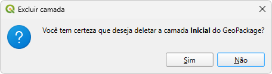
Figura 3‑12
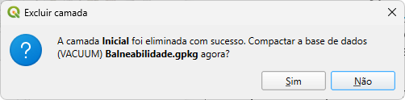
Figura 3‑13
3.9 Depurar o Banco de Dados
O comando VACUUM é uma ferramenta utilizada em bancos de dados como SQLite (base do GeoPackage) e PostgreSQL. A sua função é realizar uma limpeza e reorganização interna das tabelas. Este processo inclui:
· Remover dados de registros que foram excluídos.
· Otimizar o uso do espaço de armazenamento.
· Melhorar o desempenho geral das consultas ao banco de dados.
No contexto de um GeoPackage, executar o VACUUM pode reduzir o tamanho do arquivo .gpkg e reorganizar a disposição física dos dados no disco. Isso é particularmente útil após realizar muitas operações de inserção ou exclusão de dados.

Figura 3‑14 : Depurar o Banco de Dados
3.10 Salvando o Estilo da Camada dentro do GPKG
É possível armazenar o estilo visual de uma camada (cores, símbolos, rótulos, etc.) diretamente dentro do arquivo GeoPackage. Isso garante que, ao carregar a camada em outros projetos ou partilhá-la, o estilo seja preservado e aplicado automaticamente.
Para salvar o estilo de uma camada no GeoPackage como estilo padrão:
I. No painel "Camadas", clique com o botão direito do mouse sobre a camada cujo estilo deseja salvar.
II. No menu de contexto, vá em Exportar → Guardar Como Ficheiro de Estilo de Camada QGIS...
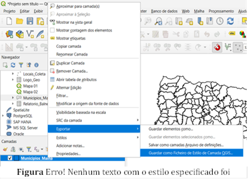
III. Observação: Embora esta opção mencione "Ficheiro de Estilo", ela também permite salvar o estilo diretamente no banco de dados GeoPackage.
IV. Na janela "Guardar estilo de camada", na secção "Guardar estilo", escolha a opção "As default in local user database".
V. Clique em OK.
VI. Se o estilo for salvo com sucesso, uma mensagem de confirmação aparecerá. Clique em OK novamente.
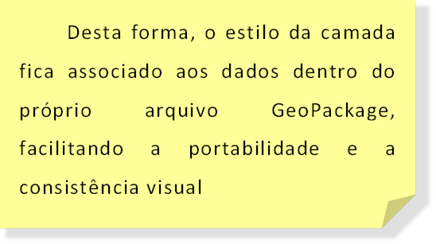
3.11 Abrindo o DB Manager e uma consulta SQL no QGIS
O DB Manager é a interface principal para interagir com bancos de dados dentro do QGIS, permitindo não apenas executar consultas, mas também gerenciar conexões, visualizar esquemas de tabelas e importar/exportar dados.
Passos para abrir o DB Manager e executar uma consulta:
I. No menu superior do QGIS, clique em Banco de Dados (Database).
II. No menu suspenso, selecione Gerenciador de BD.
Visão Geral da Interface do DB Manager:
A janela do DB Manager é tipicamente dividida em alguns painéis principais:
Árvore de Provedores de Dados (Data Source Tree): À esquerda, mostra as conexões de banco de dados disponíveis (GeoPackage, PostGIS, SpatiaLite, etc.) e as tabelas dentro delas.
Abas de Informação/Consulta: Na parte direita, abas como "Informação" (mostra detalhes da tabela selecionada), "Tabela" (mostra os dados da tabela), "Pré-visualização" (mostra a geometria) e "Janela SQL" (onde você escreverá suas consultas).
Conectando-se a um Banco de Dados (Exemplo: GeoPackage):
I. Na árvore de provedores, expanda o tipo de banco de dados desejado (por exemplo, "GeoPackage").
II. Se o seu arquivo GeoPackage já foi adicionado ao projeto QGIS ou se você já estabeleceu uma conexão, ele deverá aparecer listado.
III. Caso contrário, você pode precisar adicionar uma nova conexão (clique com o botão direito no tipo de banco de dados e escolha a opção apropriada para conectar/adicionar uma camada).
IV. Uma vez conectado, expanda o arquivo GeoPackage para ver as tabelas que ele contém.
Acessando a Janela SQL:
Com a conexão ao banco de dados estabelecida e uma fonte de dados selecionada (opcionalmente, uma tabela específica para ter como referência), procure pelo ícone da Janela SQL na barra de ferramentas do DB Manager (geralmente um ícone com "SQL") ou clique na aba "Janela SQL".
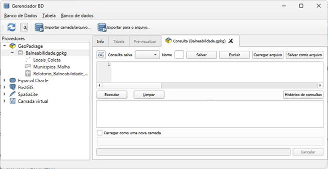
Figura 3‑19
.